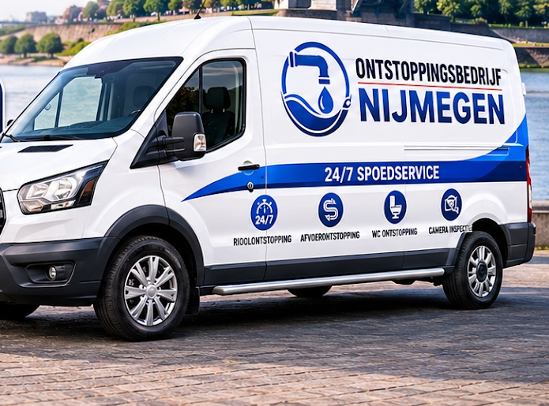

Ontstopping en loodgieter in Nijmegen
Zit het vast?
Wij krijgen
het los.
Verstopte wc, douche, gootsteen of riool? Bel ons, dag en nacht. Je krijgt vooraf een duidelijke prijsindicatie en betaalt gewoon met pin.
4,9 uit 17 Google-reviews
Herken je dit?
Een verstopping komt nooit gelegen. Hoe eerder je belt, hoe kleiner de schade. Wij sporen de blokkade op en zorgen dat het water weer vrij wegloopt.
Wij ontstoppen
- wc en toilet
- doucheput
- keukenafvoer
- gootsteen
- riool
- hoofdriolering
Voor woningen en bedrijven in Nijmegen en omgeving.
-
De afvoer borrelt
Vaak zit er een prop verderop in de leiding. Met een veermachine maken we die los, zonder dat er iets open hoeft.
-
Het water blijft staan
Vetresten in de keukenafvoer, haar en zeepresten in de doucheput. We halen het eruit en reinigen de leiding grondig.
-
Het ruikt naar riool
Een penetrante lucht uit gootsteen of putje wijst op een probleem in het riool. Met camera-inspectie zien we precies waar het zit.
-
De wc dreigt over te lopen
Dan wil je geen uitleg, dan wil je hulp. Bel direct, ook 's nachts of in het weekend. We komen met de juiste apparatuur.
Zo pakken we het aan
Eerst kijken, dan pas werken. Zo vinden we de oorzaak, voorkomen we onnodig hak- of breekwerk en komt dezelfde verstopping niet snel terug.
-
1
Luisteren en inspecteren
Je vertelt wat er aan de hand is. Daarna inspecteren we de leiding, zo nodig met een camera.
-
2
Opsporen en prijs vooraf
Vet, zeepresten, wortelgroei of verzakking: we zoeken de oorzaak en geven je vooraf een heldere prijsindicatie.
-
3
Ontstoppen
Met krachtige veermachines en hogedrukreiniging maken we de leiding weer schoon, zonder onnodige schade.
-
4
Nacontrole
We controleren of alles goed doorloopt en vertellen je in gewone taal wat we hebben aangetroffen.
Duidelijke afspraken, geen verrassingen
Je wilt geen eindeloos wachten, vage kosten of halve oplossingen. Daar zijn wij het mee eens.
- Dag en nacht bereikbaar
- Elke dag van de week 24 uur per dag, ook 's avonds, 's nachts en in het weekend.
- Prijsindicatie vooraf
- Voordat we beginnen weet je waar je aan toe bent.
- Pinnen op locatie
- Je betaalt ter plaatse met pin of kaart. Wel zo makkelijk.
- Lokaal en netjes
- We kennen Nijmegen, schakelen snel en laten geen rommel achter.
Wat klanten zeggen over het werk
17 Google-reviews
"De monteurs werkten netjes onder de krappe gootsteen in de keuken. Alles bleef schoon en ze ruimden direct op, waardoor ik de ruimte meteen weer kon gebruiken."
"Professioneel ontstoppingsbedrijf in Nijmegen, geen extra werk verkocht."
"Heel professioneel hoe ze rekening hielden met de opbouw van ons oude huis."
"geen kapotte planten of rommel in de tuin ze gingen er echt zorgvuldig mee om"
"ze namen tijd om systemen nog een keer te checken al werkte het al goed."
Staat het water al hoog? Wacht niet langer.
024 669 02 18Dag en nacht bereikbaar, ook in het weekend. Bel en we denken direct met je mee.
Vaak gevraagd
Kunnen jullie snel langskomen bij een spoedverstopping?+
Ja. We zijn 24/7 bereikbaar voor spoedgevallen en werken lokaal in Nijmegen, dus we kunnen snel schakelen. Bel 024 669 02 18.
Krijg ik vooraf een prijsindicatie?+
Altijd. Je krijgt vooraf een duidelijke prijsindicatie, zodat je achteraf niet voor verrassingen komt te staan.
Kan ik bij jullie op locatie met pin betalen?+
Ja, je betaalt ter plaatse met pin of kaart.
Hoe weten jullie waar de verstopping zit?+
Waar nodig gebruiken we camera-inspectie om de verstopping precies te lokaliseren. Zo voorkomen we onnodig hak- of breekwerk.
Kunnen jullie ook 's avonds, 's nachts of in het weekend helpen?+
Ja. We zijn elke dag 24 uur bereikbaar, dus ook buiten kantoortijden.
Contact
Spoed? Bel altijd even. Geen haast, dan kun je ook mailen of het formulier invullen.
- Telefoon
- 024 669 02 18
- Adres
- Jonkerbosplein 52
6534 AB Nijmegen - Openingstijden
- Maandag tot en met zondag, 24 uur geopend